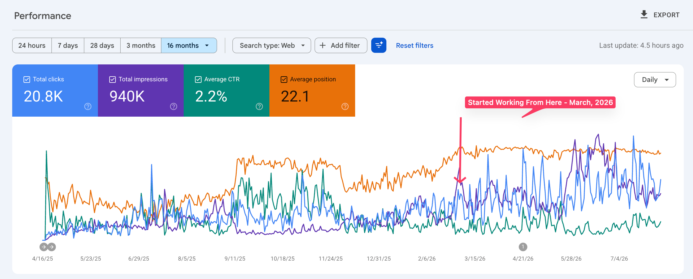

The situation
This SaaS product operated in a specialized market with relatively low keyword volume. The company had been investing in SEO for a long time — publishing content, optimizing keywords, and redesigning important pages.
There was plenty of activity, but organic traffic wasn’t growing consistently. The work appeared effective individually, yet it wasn’t creating sustained momentum or bringing enough of the right prospects into the conversion journey.
The challenge
The problem wasn’t a lack of effort or content. It was the absence of one connected strategy.
Technical issues, on-page weaknesses, website structure, and content priorities were limiting the impact of the work already being done. Some initiatives supported visibility, but they weren’t sufficiently aligned with the product’s ICP or commercial goals.
What we audited
We conducted a deeper review across:
- Technical SEO and website health
- Existing content quality and performance
- On-page optimization
- Website and information structure
- Competitor positioning and search coverage
- ICP problems and high-intent searches
- Organic entry points and conversion journeys
The audit helped us separate surface-level activity from the issues genuinely restricting growth.
What we changed
We created a custom organic growth roadmap based on impact and priority. Our work included:
- Fixing high-priority technical and on-page issues
- Strengthening existing pages before publishing more
- Improving the structure and relationships between important pages
- Refocusing content around ICP problems and buying intent
- Building clearer paths from organic landing pages to conversion
- Prioritizing commercially relevant opportunities over vanity traffic
- Continuously monitoring performance and refining the strategy
Every important change was reviewed before implementation or publishing.
The outcome
After implementation began, the website moved beyond its previous plateau and established a higher, more consistent level of organic visibility.
Google Search Console showed stronger click and impression trends, more frequent traffic peaks, and clear upward momentum following the start of the engagement in March 2026.
More importantly, the strategy shifted from simply attracting traffic to reaching prospects with a stronger likelihood of becoming customers.
The impact
GSC performance

The takeaway
Publishing more wasn’t the answer. The growth came from understanding the product, fixing the foundations, and connecting every SEO initiative to the ICP and conversion journey.
Client identity, website details, and commercially sensitive information have been withheld for confidentiality. The GSC totals shown cover the complete 16-month view; the engagement began in March 2026. Percentage-based outcomes reflect internal performance estimates.